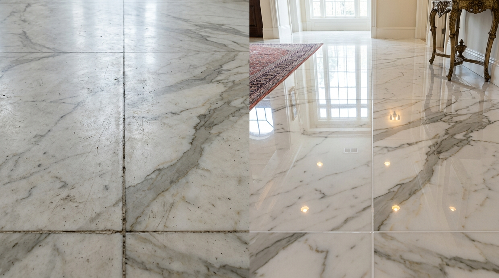
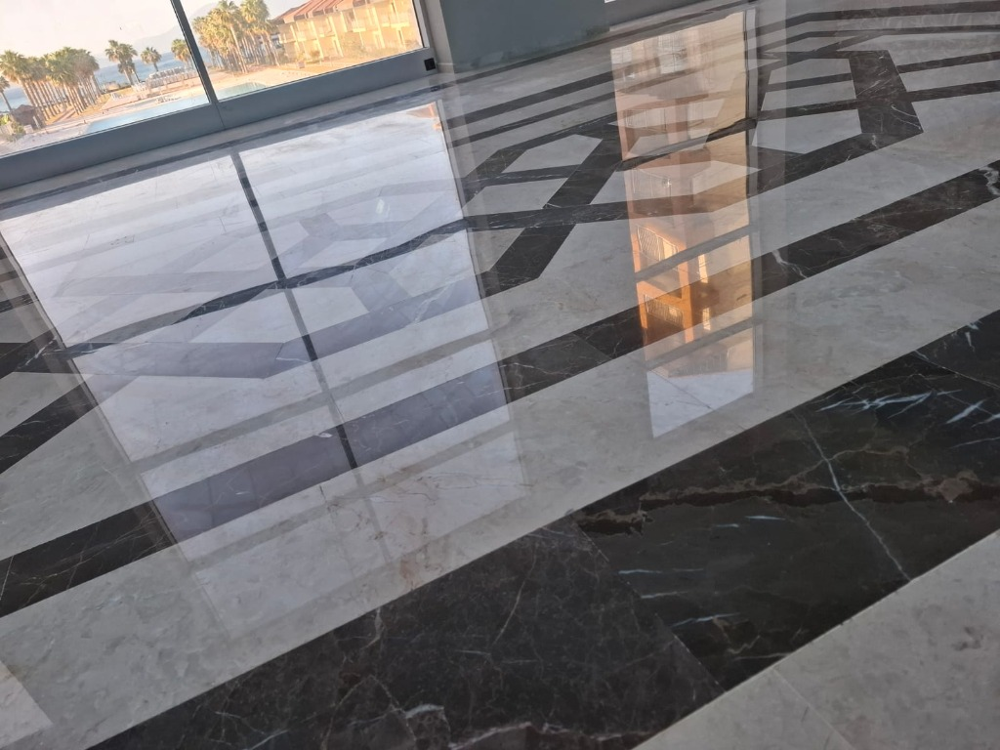
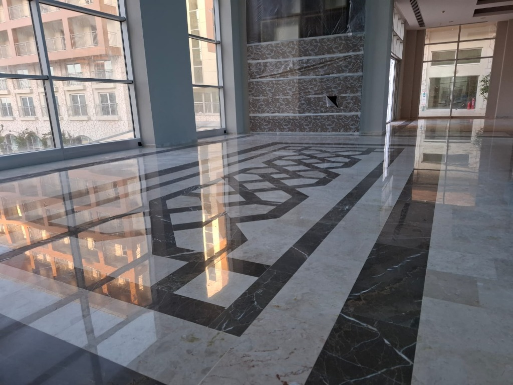
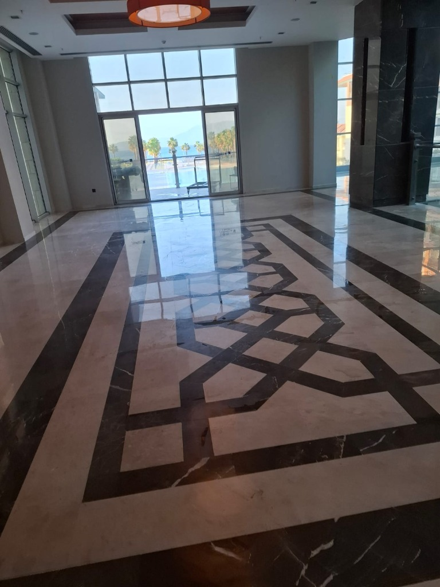
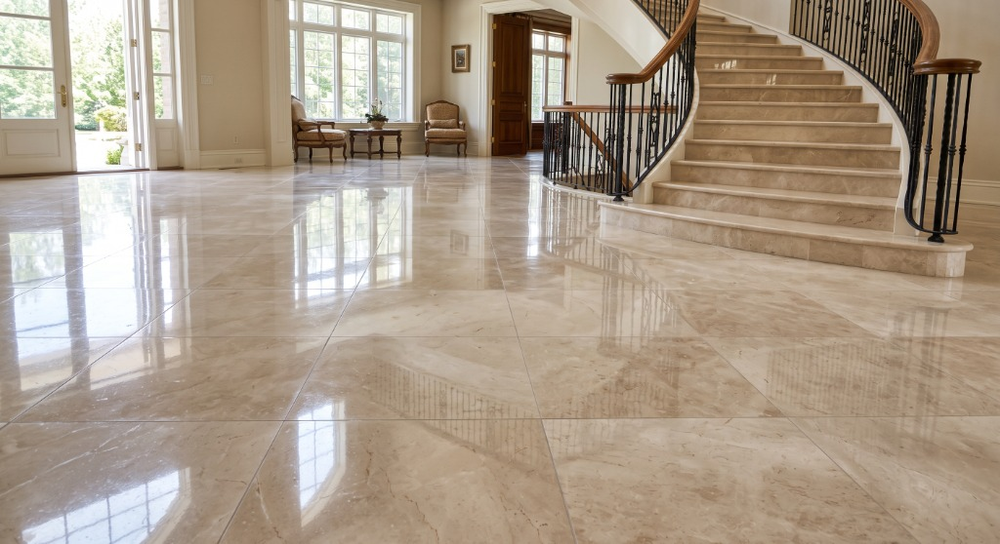
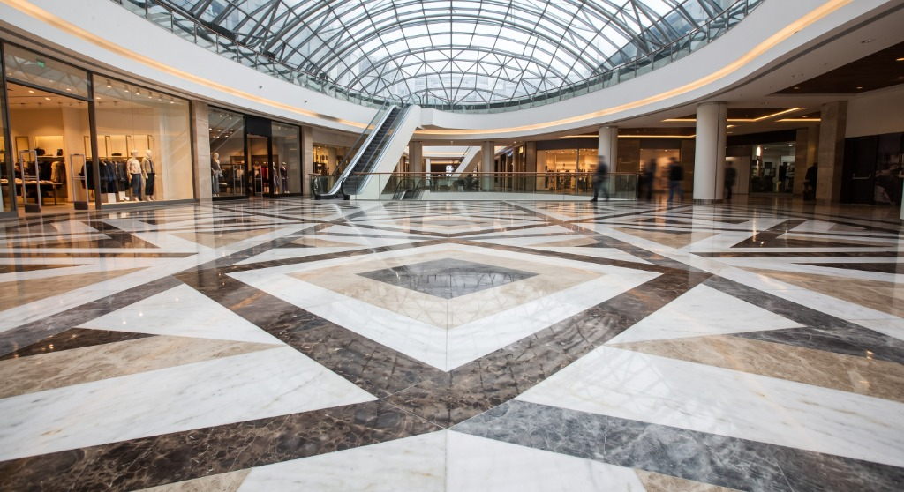

Eski, çizilmiş, matlaşmış ve asit yanığı almış mermerlerinizi değiştirmeden; İtalyan tozsuz elmas silim teknolojisi ve kristalize cila ile fabrikadan çıktığı ilk günkü lüks ve parlak haline döndürüyoruz.
Vakumlu sulu sistem
İtalyan kristalize cila
Ege'nin her noktasına
Form doldurmakla uğraşmayın! Mermer zemininizin veya yıpranmış bölgenin 1-2 adet fotoğrafını WhatsApp'tan gönderin; alan büyüklüğünüze göre en uygun net fiyatı 5 dakikada iletelim.
Yıllarca kullanımdan dolayı matlaşmış, kılcal çiziklerle dolmuş ve derzleri kararmış bir mermer zemin; profesyonel elmas silim ve İtalyan kristalize cila uygulamamız ile cam gibi ayna parlaklığına ulaşır.

Aynı mermer plaka üzerinde: Solda orijinal aşınmış durum, sağda silim ve cila sonrası ışık yansıması.
Aşağıdaki tüm görseller; lüks otel lobileri, özel villalar, AVM atriumları ve rezidanslarda gerçekleştirdiğimiz gerçek mermer silim, kot alma ve kristalize cila uygulamalarımızdan karelerdir.
Aynı lobi alanının 3 farklı açısından çekilmiş ışık kırılması, kolon hizalama ve geometrik motif yansımaları:

Dışarıdaki palmiye ve havuz manzarası zemine tam bir ayna netliğinde yansımaktadır. Zemin dalgalanmaları 3000 grit elmas honlama ile tamamen sıfırlanmıştır.

Aynı mekanın yan cephesinden görünüm. Yüksek kolonlar, duvar kaplamaları ve mermer döşemenin birleştiği süpürgelik hatlarında lekesiz, yekpare cam hissi.

Aynı salonun geriden çekilmiş tam perspektifi. Tavandaki aydınlatmanın ve ahşap detayların zemindeki siyah bordür mermerine derin yansıması gözlemlenebilir.
Açık bej emperador mermer döşemelerde zamanla oluşan ayak izleri, çizikler ve matlaşmalar giderilerek basamaklar özel el silim makineleriyle parlatıldı.

Binlerce kişinin her gün üzerinde yürüdüğü AVM zemininde ağır sanayi silim makinelerimizle sıfır kot farkı sağlandı, kaymayı engelleyen özel İtalyan kristalize koruma uygulandı.

Tüm Ege bölgesinde gezici donanımlı mobil araçlarımız, endüstriyel İtalyan silim makinelerimiz ve uzman ustalarımızla villalara, otellere, marinalara, plazalara ve sitelere yerinde müdahale ediyoruz.
Yazlık villalar, butik oteller ve beach club zeminlerinde deniz tuzu, güneş ve nemden matlaşmış doğal taş ve mermerlerin sezon öncesi kristalize parlatılması.
Karşıyaka, Konak, Alsancak, Bornova, Bayraklı kuleleri ve rezidans bina giriş lobileri, daire içi mermerler, ofis zeminleri ve merdiven basamakları.
Yalıkavak Marina çevresi, Türkbükü lüks otelleri, Gümüşlük, Turgutreis, Bitez, Torba ve Ortakent'te yer alan mülkler için tozsuz yerinde mermer yenileme.
Göcek yat kulüpleri, Fethiye Ölüdeniz otelleri, Marmaris sahil kompleksleri ve Datça taş evlerinde traverten dolgusu, mozaik silimi ve kristalize cila.
Kuşadası ve Didim yazlık sitelerinde, Efeler ve Söke iş merkezlerinde matlaşmış traverten zeminler, balkon & teras mermerleri, asit lekesi temizliği.
Cunda Adası tarihi konakları, Akçay-Altınoluk siteleri; Manisa sanayi ve fabrika zeminleri; Denizli traverten taş ocakları ve villalarında uzman restorasyon.
Sadece mermer değil; granit, traverten, mozaik karo ve bazalt dahil olmak üzere tüm doğal taş yüzeylerinizi en son teknolojiyle işliyoruz.
Döşeme sırasında plakalar arasında oluşan basamak ve kot farklarını (Lippage) elmas taşlarla kazıyarak zemini tek parça cam gibi pürüzsüz hale getiriyoruz.
Teklif AlMermerin kalsiyum karbonat yapısıyla kimyasal reaksiyona giren İtalyan kristalize bileşenler ile zemine mikron düzeyinde sertlik ve kalıcı ayna parlaklığı kazandırıyoruz.
Teklif AlTraverten taşların doğal gözeneklerindeki boşlukları taş rengine özel mastik ve reçinelerle dolduruyor, ardından ipeksi mat (honlu) veya parlak bitiş sağlıyoruz.
Teklif AlÇok yüksek sertlik derecesine sahip granit ve tarihi çinili mozaik karo zeminleri özel ağır devirli makineler ve elmas disklerle restore ediyoruz.
Teklif AlBüyük makinelerin giremediği sarmal merdivenler, süpürgelikler, mutfak ve banyo mermer tezgahlarını el makinelerimiz ve özel keçe aparatlarımızla kusursuzlaştırıyoruz.
Teklif AlKahve, şarap, yağ ve pas lekelerini vakumlu lapa yöntemiyle çekip çıkarıyor; sonrasında gözenekleri nefes alan su ve yağ itici nano koruyucuyla mühürlüyoruz.
Teklif AlEvlerinizde ve tesislerinizde eşyalarınızı boşaltmanıza gerek kalmadan, etrafa tek bir toz tanesi dahi yaymadan uyguladığımız standart adımlar:
Zeminin taş cinsi analiz edilir, 1 m² alanda ücretsiz deneme silimi yapılarak sonuç gösterilir.
Kaba elmas disklerle taşlar arasındaki yükseklik farkları traşlanır, zemin teraziye getirilir.
Kararmış eski derzler oyulur, taşın kendi rengine özel renkli epoksi reçinelerle doldurulur.
Reçineli elmas pedlerle kademeli olarak yüzey mikron seviyesinde pürüzsüzleştirilir.
İtalyan kristalizatör ve çelik keçe ile kimyasal bağ oluşturularak kalıcı ayna parlaklığı mühürlenir.